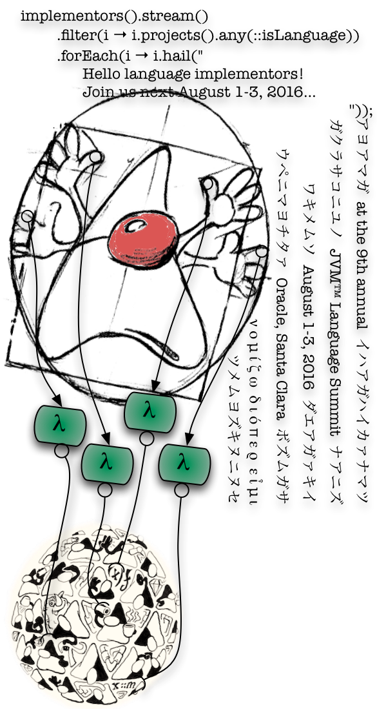

JVM Language SummitAugust 10–12, 2015
|
 |
Links
Format
The summit is held in a single classroom-style room to support direct communication between participants. About 80–100 attendees are expected.
As in previous years, we will divide the schedule between traditional presentations and “workshops.” Workshops are informal, facilitated discussion groups among smaller, self-selected participants, and should enable deeper “dives” into the subject matter. If there is interest, there will also be impromptu “lightning talks.” Traditional presentations (about 7 each day) will be given in a single track, while workshops (2–3 each day) will occur in parallel.
Why Should I Attend?
- Three days of technical presentations and conversations about programming languages and the JVM.
- Prepared talks by numerous visiting language experts, OpenJDK engineers, and other Java luminaries.
- Many opportunities to visit and network with your peers.
- Da Vinci Machine Project memorabilia. (Useful for proving, to your grandchildren, that you were there.)
- Dinner at a local restaurant, such as the Faultline Brewing Company.
- A chance to help shape the future of programming languages on the JVM.
Registration
As space allows, we are open for registration at regonline.com/jvmls2015.
Speakers: If you’d like give a presentation or lead a workshop, please register as a Speaker and include a detailed abstract. Speaker registration will remain open through May 22. There is no fee. See below for help preparing your abstract and talk. You will be notified about whether your proposal has been accepted; if not, you will be able to register as a regular attendee.
Regular attendees: Please register as an Attendee. To cover costs, we are charging a nominal conference fee of $200 when your registration is confirmed. Space is limited, and availability for regular attendees is initially small to ensure we do not overbook. If there are currently no openings, please register with the Attendee Wait List and you will be informed when more openings become available.
Oracle employees: Typically, there are more Oracle employees interested in attending then there is space to accomodate them. Thus, attendance by Oracle employees will be carefully controlled. If you would like to give a presentation, you should register as a Speaker. Otherwise, please register as an Oracle Attendee and let your manager know that you are interested in attending. You will be notified about whether you have been approved to attend.
Questions? Please send inquiries to the inquire
alias at jvmlangsummit.com.
All registrants should review the Oracle Event Code of Conduct.
Instructions for Speakers
For a successful presentation or workshop submission, please note the following:
- All talks should be deeply technical, given by designers and implementors to designers and implementors. We all speak Code here!
- Each talk, we hope and expect, will inform the audience, in detail, about the state of the art of language design and implementation on the JVM, or will explore the present and future capabilities of the JVM itself. (Some will do so indirectly by discussing non-JVM technologies.)
- Know your audience: attendees may not be likely to ever use your specific language or tool, but could learn something from your interactions with the JVM. A broad goal of the summit is to inspire us to work together on JVM-based technologies that enable a rich ecosystem at higher layers.
We encourage speakers to submit both a presentation and a workshop; we will arrange to schedule the presentation before the workshop, so that the presentation can spark people’s interest and the workshop will allow those who are really interested to go deeper into the subject area. Workshop facilitators may, but are not expected to, prepare presentation materials; in any case, they should come prepared to guide a deep technical discussion.
The conference will be recorded professionally and posted on the internet. We encourage you to allow your talk (including audio and slides) to be recorded and posted. A speaker release form will be provided before the conference; if you do not wish your talk to be recorded, simply do not complete the release form.
Previous Summits
Our short URL is jvmlangsummit.com. It redirects into the OpenJDK Da Vinci Machine Project.